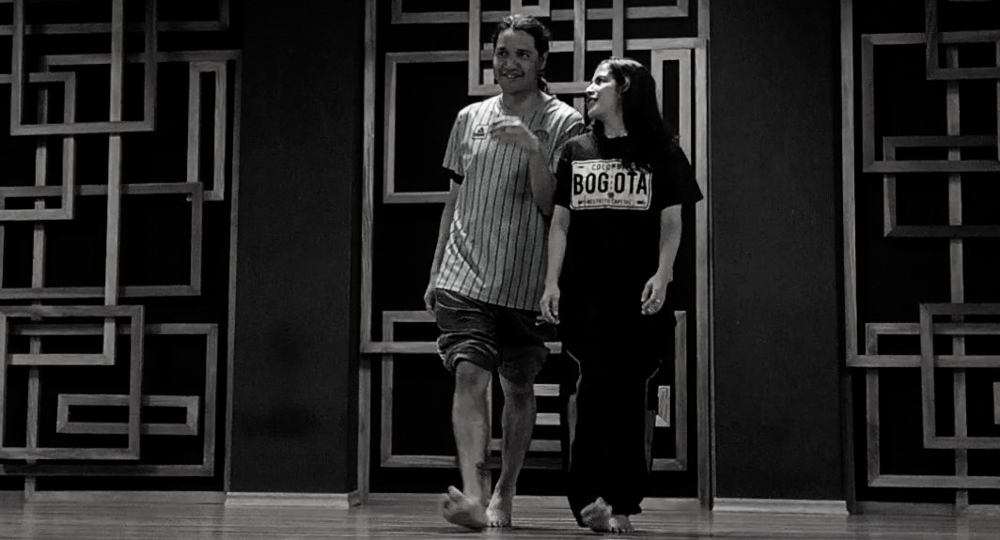
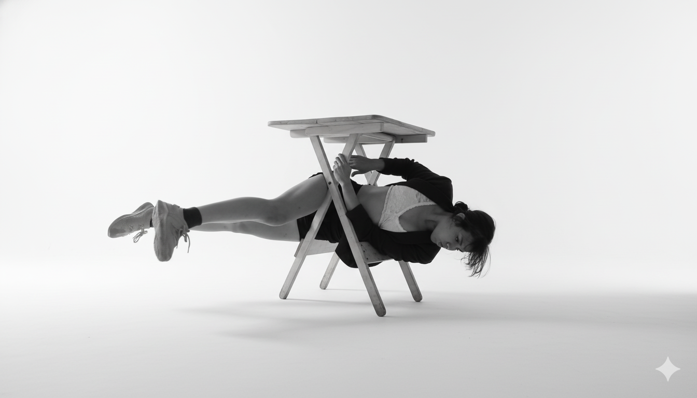
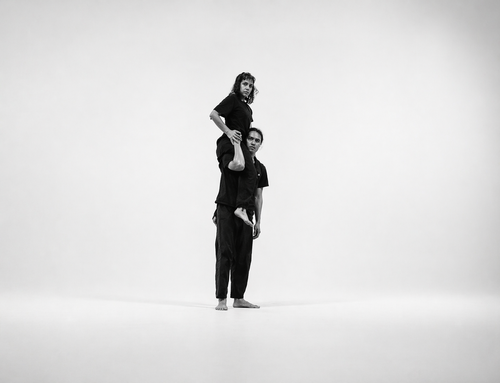

01
Ecuador / 2026
Danza · Territorio · Resistencia
────────────
Fanzine de práctica
artística y pedagógica

Mal/Entiéndeme
GEOMETRÍAS VIVAS
Cuerpo · Cansancio · Potencia · Colectivo
Geometrías Vivas surge como práctica artística y pedagógica nacida del cansancio: el agotamiento físico, emocional y político de los cuerpos que crean, enseñan y sostienen procesos culturales en Ecuador.
Gratitud a Joseline López, Cristian Aguilera, María Fernanda Lara y Peter Ronquillo, por atreverse a habitar la calle como escenario y sostener la creación.
Ensayo / Einstein on the Beach

✕ imagen 03 / espacio públicoEn un contexto donde la danza contemporánea carece de apoyo estatal sostenido, los artistas desarrollan estrategias de resistencia: ocupar el espacio público, generar redes autogestivas y transformar la precariedad en potencia creativa.
La energía aquí no se entiende como recurso infinito ni productividad constante, sino como algo que se agota, se transfiere y se regenera colectivamente.
Bailar se vuelve una forma de recuperación: acto de resistencia donde la energía circula entre cuerpos, suelo y memoria.

✕ img 04
✕ img 05En los talleres y performances de Geometrías Vivas, el cansancio no se oculta; se vuelve visible, compartido y se transforma en sostén mutuo.
Este testimonio propone una reflexión encarnada sobre cómo el cuerpo colectivo administra su energía frente a la precarización cultural y la exigencia de rendimiento.
Más que una historia de superación, es un relato de estamina colectiva, donde la recuperación es relacional y la energía aparece como un flujo sensible que conecta territorio, memoria y presente.